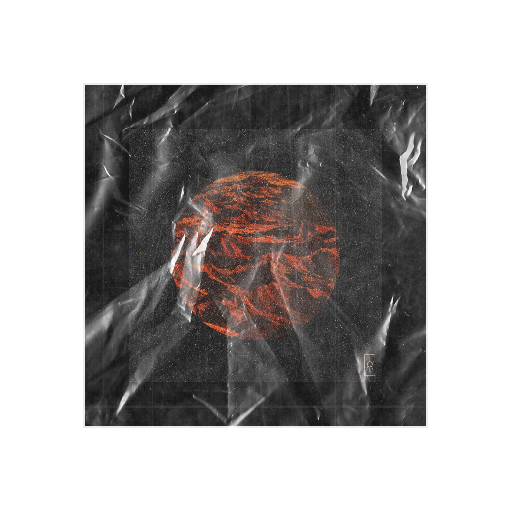
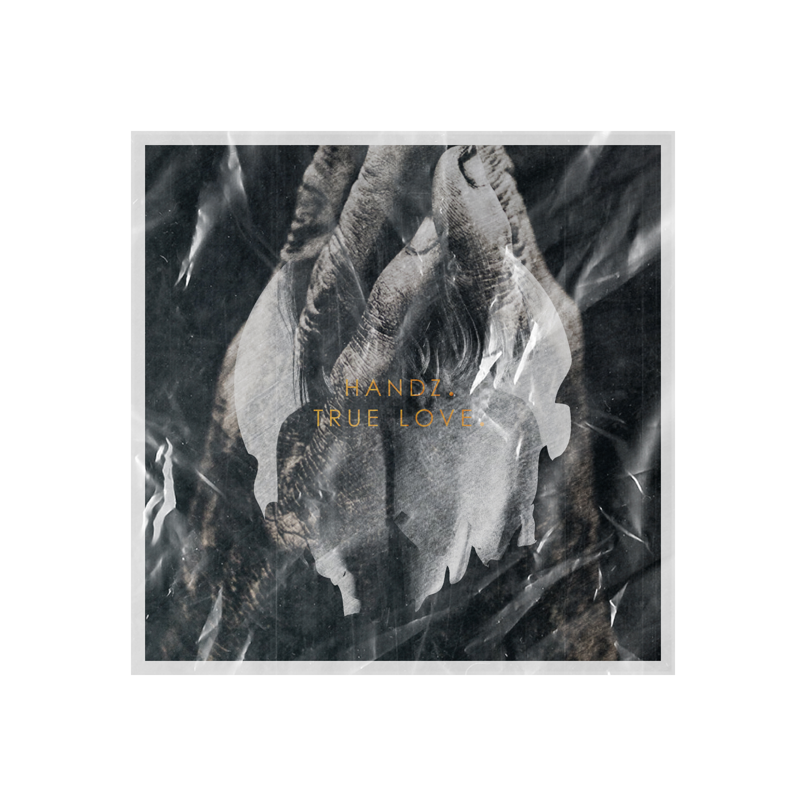
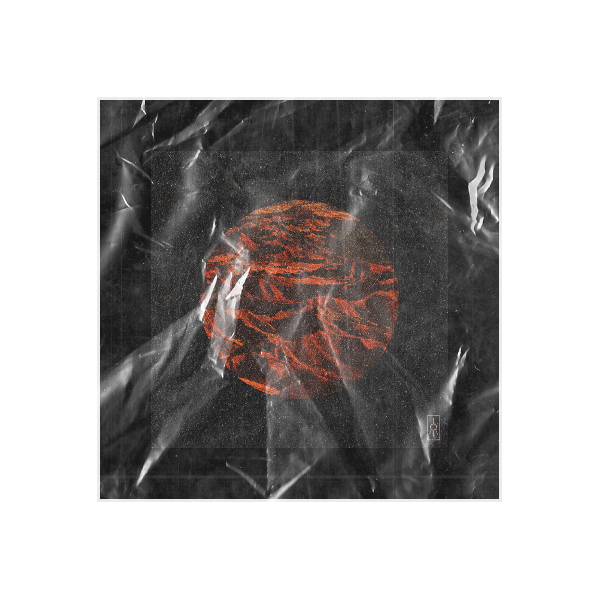
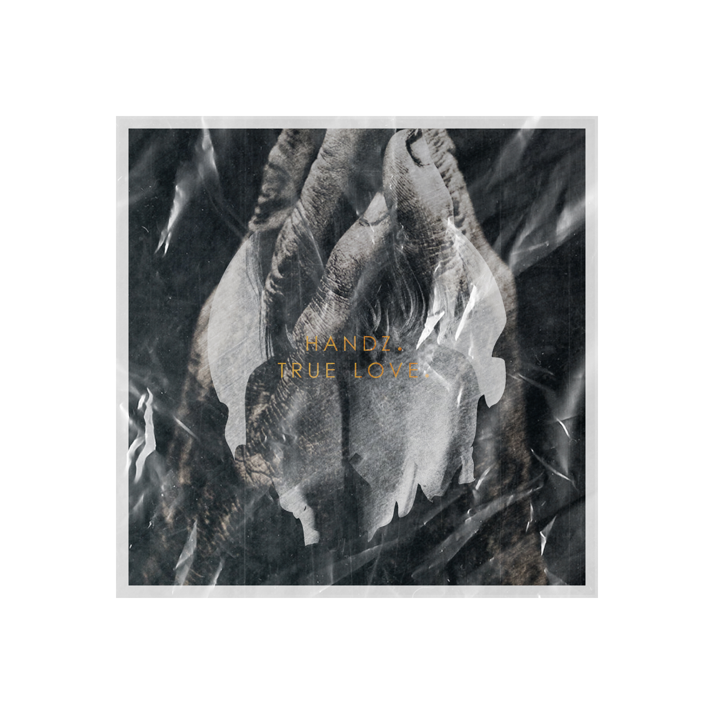
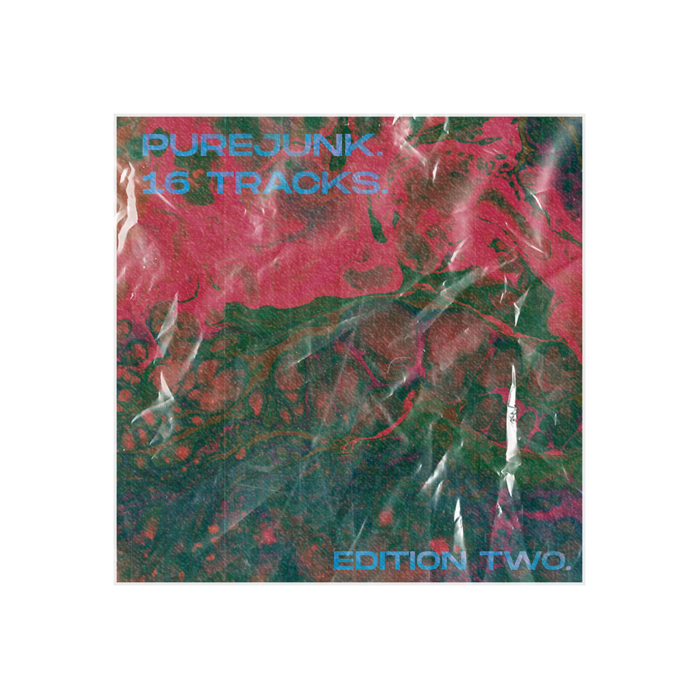
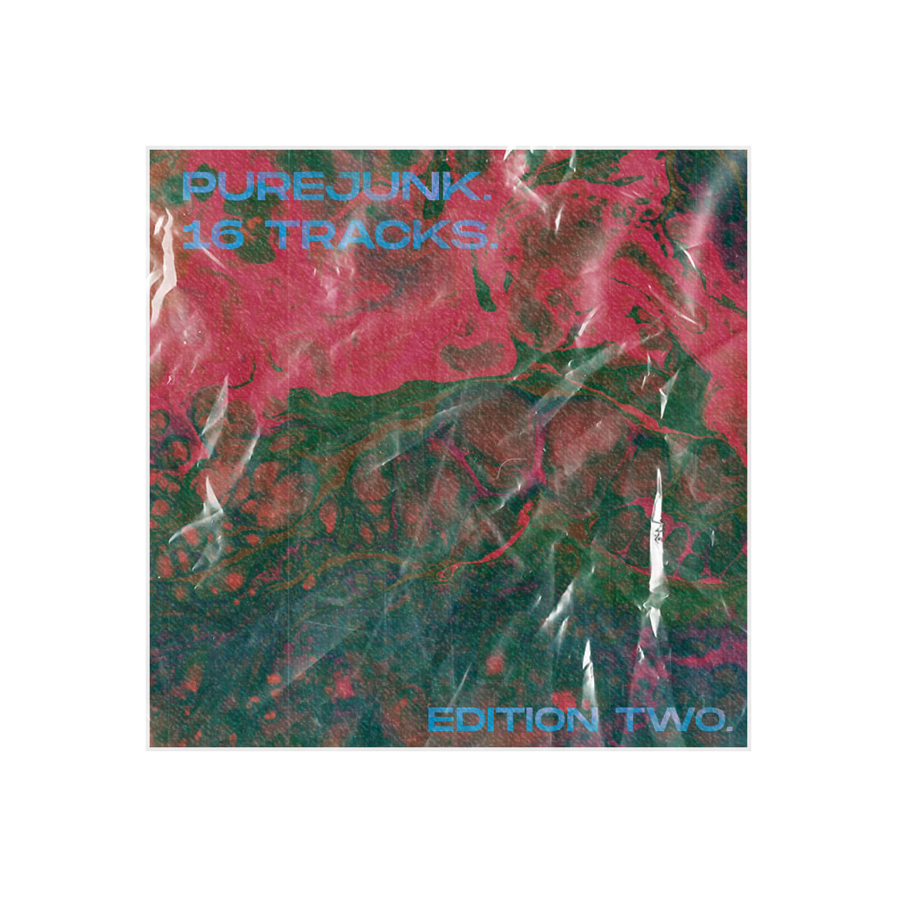
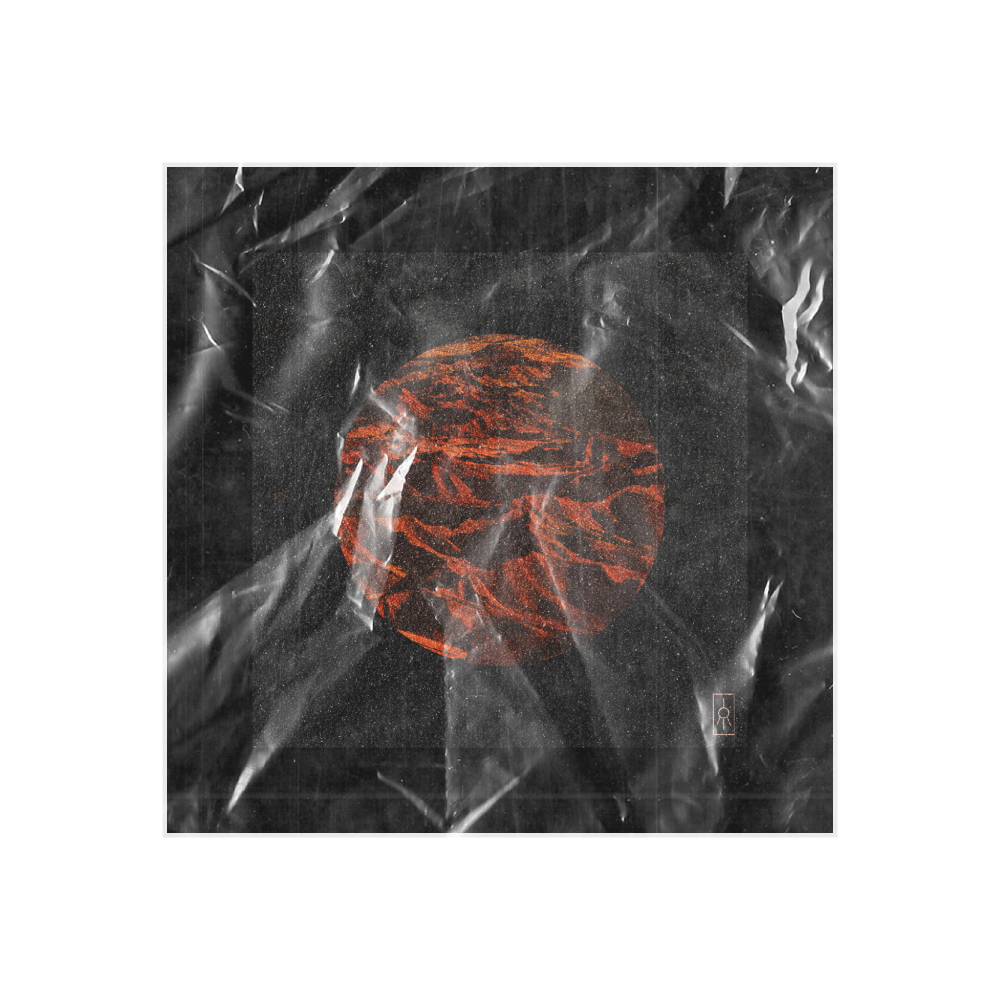
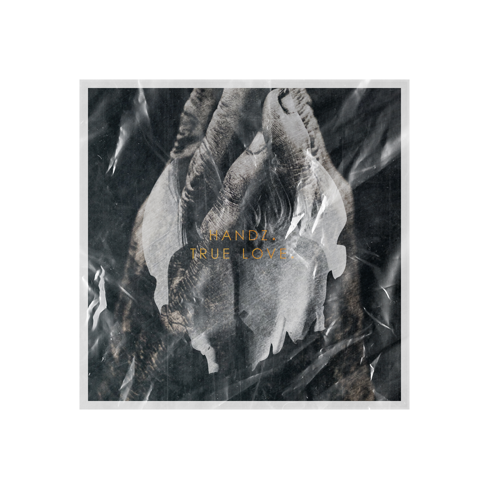
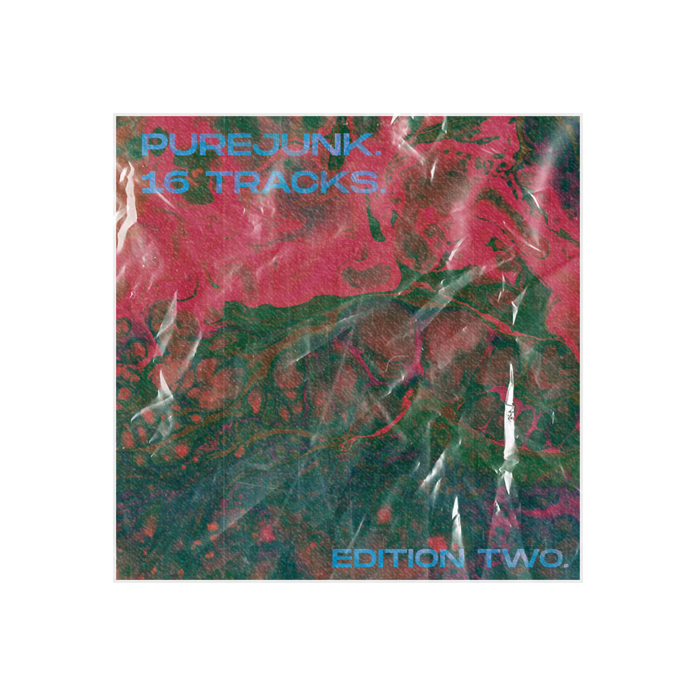

 


This small series explored the possibilities within the field of cover art design, one of the most fertile grounds for doing so.
During the process, I came to discover the importance of lightning and materials, as well as the importance of textures to fully flesh last details.
These will definitely be expanded through future editions, applying everyhing that was learned.


